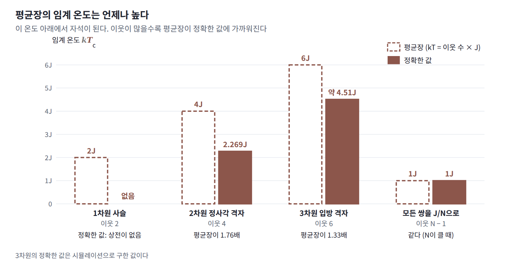

임계 온도: 평균장은 질서를 과대평가한다
그렇다면 이웃이 몇 개로 정해진 결합에서는 평균장이 얼마나, 그리고 어느 쪽으로 틀릴까?
격자의 임계 온도
정사각 격자를 d차원으로 넓힌 격자의 스핀은 이웃이 2d개이므로 평균장은 2dJm이고, 자기 일관 방정식 m = tanh(2dβJm)은 kT = 2dJ 아래에서 0이 아닌 해를 갖는다. 이것을 정확한 임계 온도와 나란히 놓으면 다음과 같다.
| 결합 | 스핀 하나의 이웃 수 | 평균장의 임계 온도 | 정확한 임계 온도 |
|---|---|---|---|
| 한 줄로 이은 스핀 | 2 | kT = 2J | 없음 |
| 2차원 정사각 격자 | 4 | kT = 4J | kT = 2.269J |
| 3차원 정육면체 격자 | 6 | kT = 6J | kT ≈ 4.51J (시뮬레이션) |
| 모든 쌍을 J/N으로 | N − 1 | kT = J | kT = J (N이 클 때) |
평균장의 임계 온도는 언제나 정확한 값보다 높고, 이웃이 많을수록 그 비가 1에 가까워진다. 이것이 평균장이 틀리는 방향이다. 평균장은 이웃이 반대로 돌아서는 순간들을 보지 못하므로, 실제로는 질서가 이미 흩어진 온도에서도 질서가 남아 있다고 답한다. 2차원 격자에서 kT = 2.0J이면 평균장의 자화가 0.958, 정확한 자화가 0.911로 둘이 가깝지만, kT = 3.0J에서는 평균장이 0.776을 내놓는 동안 정확한 자화는 0이다. 스핀 하나당 ln Z의 틈도 kT = 2.0J에서 0.006이다가 두 임계 온도 사이인 kT = 3.5J 근처에서 0.075로 가장 커지고, 더 높은 온도에서는 다시 줄어든다. 스핀들이 서로 강하게 얽혀 함께 흔들리는 임계 온도 근처가 평균장이 가장 크게 틀리는 곳이다.
이웃이 적을 때 평균장을 고치는 길도 일찍 나왔다. 1935년 베테는 원자 하나와 그 이웃들을 정확히 다루어 평균장 근사를 개선했다.

코드: 평균장 방정식을 풀고 정확한 값과 비교하기
스핀을 하나씩 골라 mᵢ ← tanh(bᵢ + ΣⱼJᵢⱼmⱼ)로 바꾸는 일을 되풀이하는 함수 하나로 세 가지 계를 푼다. 스핀 두 개는 네 배치를 모두 더해, 모든 쌍을 묶은 스핀 100개는 위를 향한 수로 묶어 정확한 ln Z를 구하고, 32 × 32 격자는 온사거가 구한 무한 격자의 식과 비교한다. 함수가 돌려주는 −βF[q]는 어느 경우에나 ln Z의 하한이어야 한다.
import numpy as np, itertools
from math import lgamma
from scipy.integrate import dblquad
def H2(m): # 평균 방향이 m인 ±1 동전 하나의 엔트로피 (nat)
p = np.clip((1 + m) / 2, 1e-15, 1 - 1e-15)
return -(p * np.log(p) + (1 - p) * np.log(1 - p))
def mean_field(J, b, m0, sweeps=500):
"""곱 분포로 볼츠만 분포를 흉내 낸다 (kT = 1). 스핀을 하나씩 골라
mᵢ ← tanh(bᵢ + Σⱼ Jᵢⱼ mⱼ)로 바꾸면 F[q]가 매번 줄어든다. −βF[q] = ln Z의 하한도 돌려준다."""
m = m0.astype(float).copy()
for _ in range(sweeps):
for i in range(len(m)):
m[i] = np.tanh(b[i] + J[i] @ m)
bound = 0.5 * m @ J @ m + b @ m + H2(m).sum() # −βF[q] = −β⟨E⟩_q + H(q)
return m, bound
# (1) 두 스핀: βJ = 1, βb = 0.5. 네 배치를 다 더한 정확한 값과 비교
J = np.array([[0, 1.0], [1.0, 0]]); b = np.array([0.5, 0.5])
S = np.array(list(itertools.product([-1, 1], repeat=2)))
logw = 0.5 * np.einsum('si,ij,sj->s', S, J, S) + S @ b
p = np.exp(logw - logw.max()); lnZ = np.log(p.sum()) + logw.max(); p /= p.sum()
m, bound = mean_field(J, b, np.zeros(2))
print(f"두 스핀: 정확한 ⟨s⟩ = {(p @ S)[0]:.4f}, 평균장 m = {m[0]:.4f} | ln Z = {lnZ:.4f}, 하한 = {bound:.4f}")
# (2) 모든 쌍을 J/N으로 묶은 스핀 N = 100개, βJ = 1.5. 위를 향한 수로 묶어 정확히 센다
N, K = 100, 1.5
J = np.full((N, N), K / N); np.fill_diagonal(J, 0)
n = np.arange(N + 1); M = 2 * n - N
logw = np.array([lgamma(N + 1) - lgamma(k + 1) - lgamma(N - k + 1) for k in n]) + K * (M**2 - N) / (2 * N)
lnZ = logw.max() + np.log(np.exp(logw - logw.max()).sum())
m, bound = mean_field(J, np.zeros(N), np.full(N, 0.1))
print(f"완전 연결 N = 100: 평균장 m = {m.mean():.4f} | ln Z = {lnZ:.4f}, 하한 = {bound:.4f}, 틈 = {lnZ - bound:.4f}")
# (3) 32 × 32 정사각 격자 (주기 경계, 이웃 넷). 무한 격자의 정확한 값은 온사거의 식으로
L = 32; idx = np.arange(L * L).reshape(L, L); J1 = np.zeros((L * L, L * L))
for shift in [(0, 1), (1, 0)]:
nb = np.roll(idx, shift, axis=(0, 1)).ravel()
J1[idx.ravel(), nb] = J1[nb, idx.ravel()] = 1.0
def onsager(K): # 스핀 하나당 ln Z (무한 격자)
f = lambda a, c: np.log(np.cosh(2*K)**2 - np.sinh(2*K) * (np.cos(a) + np.cos(c)))
return np.log(2) + dblquad(f, 0, 2*np.pi, 0, 2*np.pi)[0] / (8 * np.pi**2)
def yang(K): # 무한 격자의 정확한 자화 (임계 온도 아래에서만 0이 아님)
s = np.sinh(2 * K); return (1 - s**-4) ** 0.125 if s > 1 else 0.0
for kT in (2.0, 2.4, 3.0, 3.5):
K = 1 / kT
m, bound = mean_field(K * J1, np.zeros(L * L), np.full(L * L, 0.1), sweeps=200)
print(f"격자 kT = {kT}J: 평균장 m = {m.mean():.4f}, 정확한 m = {yang(K):.4f} | "
f"스핀 하나당 ln Z = {onsager(K):.4f}, 하한 = {bound / L**2:.4f}")
# 두 스핀: 정확한 ⟨s⟩ = 0.7002, 평균장 m = 0.8812 | ln Z = 2.2110, 하한 = 2.1083
# 완전 연결 N = 100: 평균장 m = 0.8528 | ln Z = 81.0407, 하한 = 80.2849, 틈 = 0.7557
# 격자 kT = 2.0J: 평균장 m = 0.9575, 정확한 m = 0.9113 | 스핀 하나당 ln Z = 1.0258, 하한 = 1.0197
# 격자 kT = 2.4J: 평균장 m = 0.9073, 정확한 m = 0.0000 | 스핀 하나당 ln Z = 0.8986, 하한 = 0.8736
# 격자 kT = 3.0J: 평균장 m = 0.7755, 정확한 m = 0.0000 | 스핀 하나당 ln Z = 0.8159, 하한 = 0.7521
# 격자 kT = 3.5J: 평균장 m = 0.5811, 정확한 m = 0.0000 | 스핀 하나당 ln Z = 0.7808, 하한 = 0.7062
세 계 모두에서 −βF[q]는 ln Z보다 작고, 평균장의 자화는 정확한 값보다 크다. 격자에서 kT = 2.0J일 때는 자화의 차이가 0.05 남짓이지만, kT = 2.4J에서는 정확한 자화가 0인데도 평균장은 0.907을, 3.5J에서도 0.581을 내놓는다. 모든 쌍을 묶은 스핀 100개의 틈 0.756은 스핀 하나당 0.0076에 불과하다.
문제 3. 한 줄로 이은 스핀에 평균장을 쓰면
스핀 N개가 고리 모양의 한 줄로 늘어서 있고 바로 이웃한 쌍에만 결합 J가 있다. (가) 평균장의 자기 일관 방정식과 평균장이 예측하는 임계 온도를 구하라. (나) βJ = 1.5에서 평균장의 자화와 스핀 하나당 −βF[q]를, 정확한 스핀 하나당 ln Z = ln(2cosh βJ)와 비교하라. (다) 평균장은 무엇을 틀렸는가?

스핀마다 이웃이 둘이니까 평균장은 2Jm이고, 방정식은 m = tanh(2βJm)이에요. 기울기 2βJ가 1을 넘으면 0이 아닌 해가 생기니까 임계 온도는 kT = 2J고요. βJ = 1.5면 m = tanh(3m)이라 m = 0.995, 거의 모든 스핀이 한쪽을 향한 자석이에요.

잠깐, 한 줄로 이은 스핀은 상전이가 없었잖아. 경계 하나를 놓는 비용이 2J로 정해져 있는데 놓을 자리는 N곳이나 되니까, 스핀이 많을수록 구간이 잘게 나뉘어서 자화가 0으로 간다고 했어.

어? 그럼 제 방정식이 틀린 거예요? 미분은 맞게 했는데요.

방정식은 맞아요. (나)를 계산해 보면 무엇이 틀렸는지 보일 거예요.

결합이 스핀 하나당 한 쌍꼴이니까 −βF[q]/N = βJm² + H((1 + m)/2)이고, 0.995를 넣으면 1.5025예요. 정확한 값은 ln(2cosh 1.5) = 1.5486이고요. 틈이 스핀 하나당 0.046이면… 생각보다 별로 안 틀렸는데요?

자유에너지로는 0.046밖에 안 틀렸는데, 자화는 0.995 대 0이야. 숫자 하나는 거의 맞고 다른 하나는 완전히 틀렸어.

그 둘이 어떻게 함께 일어날 수 있을까요? 실제 한 줄 스핀에서 이웃한 두 스핀이 같은 방향일 확률은 얼마였죠?

⟨sᵢsᵢ₊₁⟩ = tanh 1.5 = 0.905예요. 반대 방향인 쌍이 4.7%쯤이니까 구간 하나가 평균 스무 개 남짓 이어지고요. 아, 가까이서 보면 거의 다 같은 방향이라 에너지와 엔트로피는 한쪽으로 정렬된 상태와 비슷하구나. 그런데 구간마다 방향이 달라서 줄 전체의 평균은 0이고.
그래요. 곱 분포는 「가까운 것끼리는 같은 방향이되 멀리서는 제각각」이라는 상태를 표현할 수 없어요. 이웃과 같은 방향이라는 이득을 얻으려면 줄 전체를 한쪽으로 쏠리게 하는 수밖에 없죠. 그래서 자유에너지는 비슷하게 맞추면서 자화는 전혀 다른 상태를 골라요. 이웃이 둘뿐이면 한 이웃이 반대로 돌아서는 일이 평균장을 크게 흔드는데, 그걸 보지 못하는 거예요.

우리 줄 양옆 두 명이 조용하니까 반 전체가 조용하다고 믿은 거네요. 저쪽 줄은 한창 떠들고 있는데요.